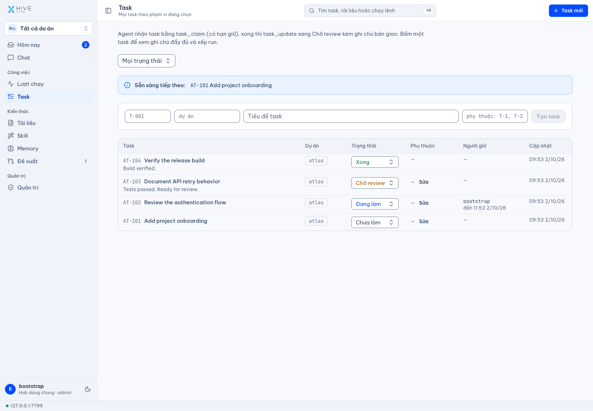
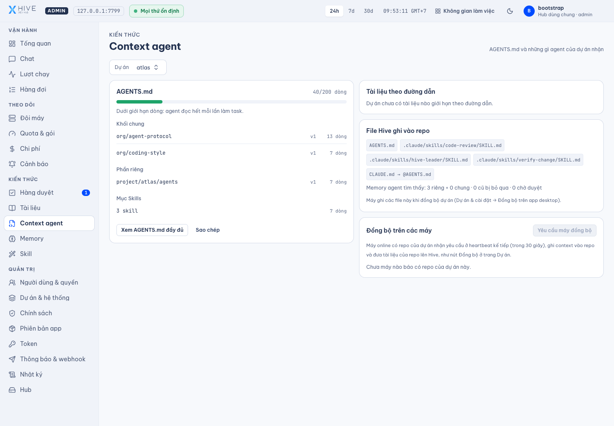
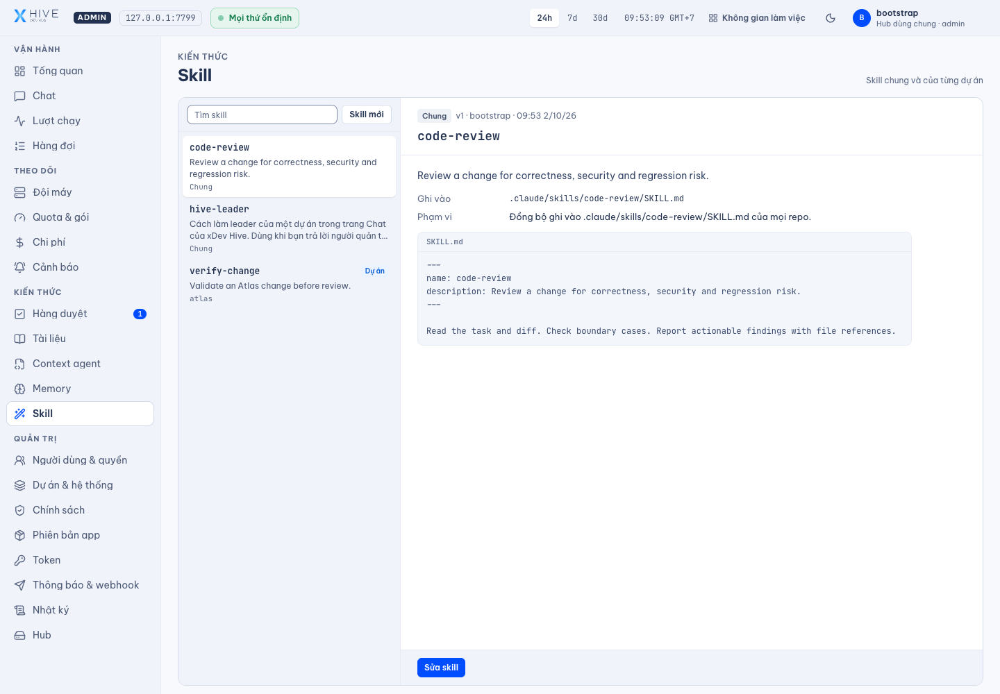
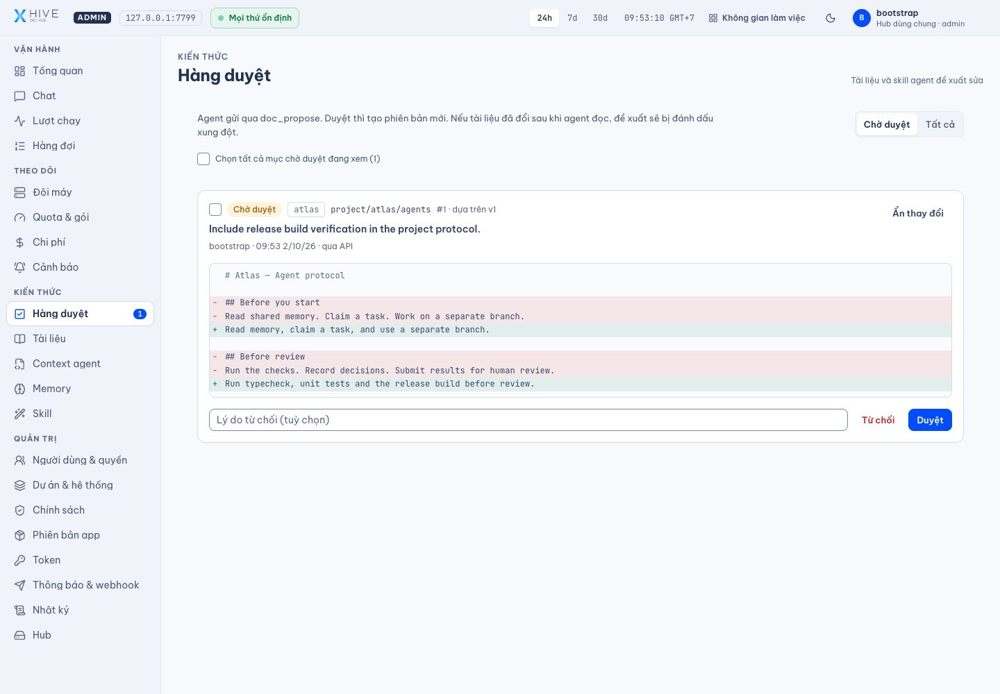
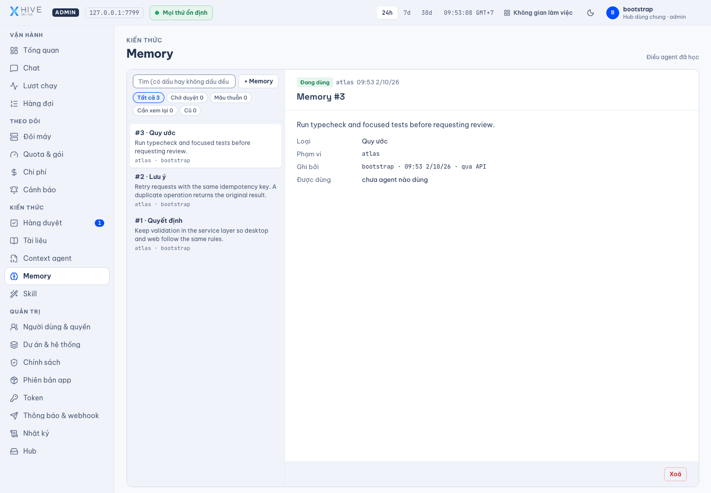
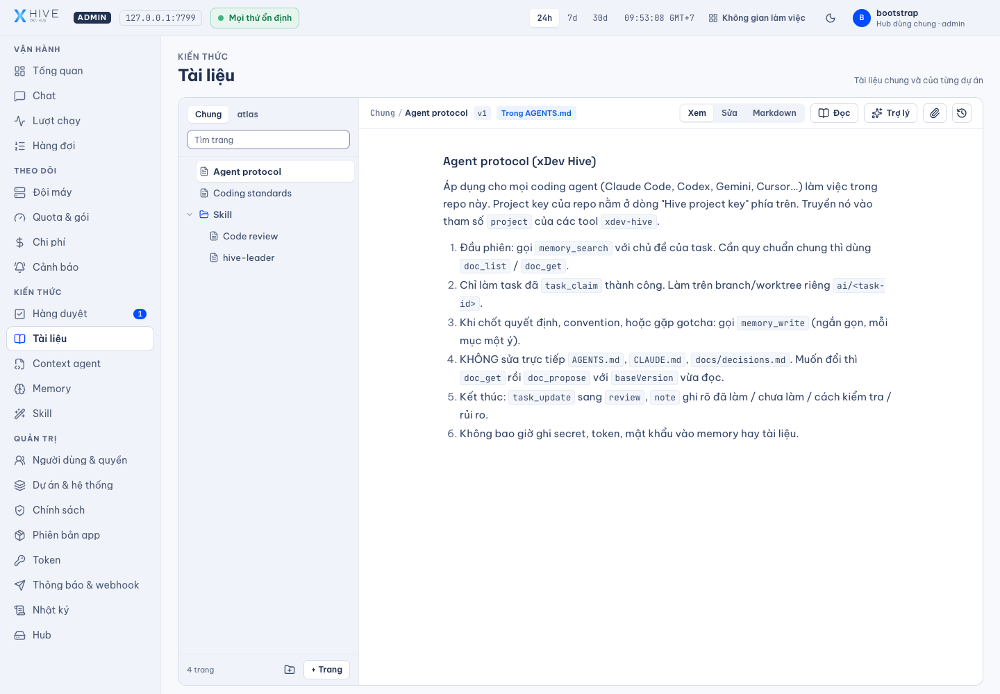

Nhiều agent, công việc rời rạc
Task cần có người nhận, trạng thái và phụ thuộc rõ ràng để team theo dõi việc đang làm và kết quả chờ review.

xDev Hive / AI SDLC
Nền tảng điều phối vòng đời phát triển phần mềm cùng AI. xDev Hive kết nối team, coding agent và repo: nhận task, chuẩn bị ngữ cảnh, theo dõi lượt chạy, review kết quả và giữ lại bài học cho công việc tiếp theo.
AI SDLC — vòng đời phát triển phần mềm cùng AI, với team giữ quyền quyết định.
Điều phối team và agent trong AI SDLC
MCP
Hub web · Ứng dụng desktop
Task dẫn dắt công việc. Ngữ cảnh hỗ trợ agent. Kết quả được review, bài học được lưu lại để vòng phát triển tiếp theo tốt hơn.
Từ AI coding đến AI SDLC
Viết code là một phần của công việc. Team còn cần phân công task, đưa đúng ngữ cảnh cho agent, theo dõi kết quả và review trước khi tiếp tục. Hive kết nối các bước này với kiến thức dự án, để nhiều agent cùng làm trong một quy trình có người chịu trách nhiệm.
Task cần có người nhận, trạng thái và phụ thuộc rõ ràng để team theo dõi việc đang làm và kết quả chờ review.
Agent cần đúng quy chuẩn, skill và quyết định kỹ thuật trước khi bắt đầu; team cần kiểm tra được bộ ngữ cảnh đó.
Review xong một task, quyết định và gotcha cần được lưu, duyệt và tìm lại để task tiếp theo kế thừa điều team đã học.
Bên trong xDev Hive
Giao diện thật của Hive trên một hub demo riêng. Dự án Atlas và nội dung trong ảnh là dữ liệu minh họa.
Tạo task, khai báo phụ thuộc và theo dõi trạng thái từ cần làm đến hoàn tất. Cơ chế nhận việc có thời hạn giúp điều phối khi nhiều agent tham gia.
Giao diện thật · dữ liệu demo Atlas
Kiểm tra bộ tài liệu dùng làm ngữ cảnh, phân biệt quy chuẩn chung và chỉ dẫn riêng cho dự án trước khi đưa xuống các repo.
Giao diện thật · dữ liệu demo Atlas
Quản lý skill cho cả team, thêm phiên bản riêng theo dự án. Claude Code nạp skill đã đồng bộ trong repo; agent khác tìm và đọc skill qua MCP.
Giao diện thật · dữ liệu demo Atlas
Xem lý do và diff trước khi duyệt tài liệu hoặc skill. Nếu tài liệu gốc đã thay đổi, đề xuất được đánh dấu xung đột để tránh ghi đè kiến thức mới.
Giao diện thật · dữ liệu demo Atlas
Giữ lại quyết định, convention và gotcha. Agent tìm memory theo dự án; người quản trị duyệt, xem lại các mục cũ và đánh dấu lại khi file liên quan đã thay đổi.
Giao diện thật · dữ liệu demo Atlas
Sắp xếp tài liệu theo team và dự án. Đọc, soạn thảo, lưu phiên bản và theo dõi thay đổi; đồng bộ những chỉ dẫn phù hợp về repo để agent đọc đúng lúc.
Giao diện thật · dữ liệu demo Atlas
Hive kiểm soát việc chia sẻ tài liệu, skill và memory bằng quyền truy cập và quy trình duyệt. Coding agent chạy theo CLI, tài khoản và môi trường bạn cấu hình. Quota, sandbox và tích hợp repo phụ thuộc vào hệ thống tương ứng.
HIVE / PRODUCT FILM
Theo dõi cách Hive kết nối task, ngữ cảnh, coding agent và bước review qua giao diện demo thật.
Giao diện thật với dữ liệu demo · Giọng đọc tổng hợp · 4:34
AI SDLC là vòng đời phát triển phần mềm cùng AI. Viết code là một phần của quy trình: team còn cần giao task, chuẩn bị ngữ cảnh, theo dõi agent, review kết quả và giữ lại bài học. xDev Hive là nền tảng điều phối các bước này, kết nối team, coding agent và repo để công việc tiến lên với trách nhiệm rõ ràng.
Một agent viết code, một agent khác review, nhưng ai đang nhận task và kết quả nằm ở đâu? Nếu hướng dẫn ở một nơi, quyết định ở trong chat và trạng thái công việc ở nơi khác, team khó tiếp nối. Hive kết nối task, lượt chạy và kiến thức dự án. Tài liệu, memory và skill cung cấp ngữ cảnh để agent thực hiện công việc và giúp team đánh giá kết quả.
Trong Hive, tài liệu được sắp xếp theo phạm vi chung, hệ thống và dự án. Team có thể soạn hướng dẫn, quy chuẩn và quyết định kỹ thuật, rồi xem lại lịch sử hoặc diff của từng phiên bản. Màn hình này là giao diện Hive thật, với dữ liệu demo của dự án Atlas. Tài liệu dùng làm ngữ cảnh có thể được đồng bộ về repo.
Không phải mọi hướng dẫn đều cần nằm trong một file dài. Hive hỗ trợ tài liệu theo phạm vi và đường dẫn, để quy chuẩn phù hợp được đưa vào repo. Trang ngữ cảnh giúp người quản trị kiểm tra những gì agent sẽ đọc. Cấu hình agent và bước đồng bộ trên desktop quyết định cách tài liệu được phân phối xuống máy.
Memory giữ những điều đáng nhớ sau một task: một quyết định, một convention, hoặc một điểm dễ gây lỗi. Agent tìm kiến thức theo dự án, và có thể dùng những mục được chia sẻ cho cả team. Trên hub, memory mới từ agent đi qua bước duyệt trước khi agent khác sử dụng. Các mục cũ hoặc liên quan đến file đã thay đổi có thể được xem lại.
Một quy trình review tốt không nên phải viết lại cho từng agent. Hive quản lý skill chung của team và skill riêng theo dự án. Khi trùng tên, skill của dự án thay thế skill chung. Claude Code có thể nạp skill đã đồng bộ trong repo. Những agent khác tìm và đọc skill qua MCP. Thay đổi skill cũng có thể được gửi thành đề xuất để người quản trị duyệt.
Khi nhiều agent cùng tham gia, công việc cần có trạng thái và người chịu trách nhiệm. Hive hỗ trợ task với phụ thuộc, trạng thái từ cần làm đến hoàn tất, và cơ chế nhận việc có thời hạn. Agent đọc ngữ cảnh rồi nhận task trước khi bắt đầu. Kết quả được cập nhật để team biết việc nào đang làm, việc nào đã sẵn sàng cho review.
Ứng dụng desktop chạy coding agent qua những CLI và hồ sơ đã được cấu hình trên máy. Team theo dõi lượt chạy, log và kết quả từ hub. Tùy cấu hình, runner sử dụng worktree riêng, xoay sang hồ sơ khác khi gặp giới hạn quota, hoặc chạy nhiều ứng viên để chọn kết quả. Chi phí và giới hạn sử dụng vẫn phụ thuộc vào từng nhà cung cấp agent.
Agent có thể đề xuất sửa tài liệu hoặc skill, thay vì ghi đè trực tiếp vào quy chuẩn chung. Người có quyền xem lý do và diff trước khi duyệt. Nếu tài liệu gốc đã thay đổi, Hive đánh dấu xung đột để tránh áp dụng một đề xuất cũ lên kiến thức mới. Đây là cách giữ người quản trị trong vòng quyết định khi kiến thức được cập nhật.
Bạn có thể bắt đầu với dữ liệu local trong ứng dụng desktop. Khi cần làm việc cùng team, hub web tập trung tài khoản, quyền theo dự án, tài liệu, memory và thông tin từ nhiều máy. SSO, webhook Teams hoặc Slack, tìm memory theo nghĩa và lưu tệp ngoài cơ sở dữ liệu là các tích hợp cần được cấu hình phù hợp với hệ thống của bạn.
Bắt đầu AI SDLC từ công việc thật của team: một repo, một task rõ ràng và coding agent đã cấu hình. Hive điều phối task, ngữ cảnh và lượt chạy; team review kết quả code qua PR hoặc MR và duyệt những đề xuất cập nhật kiến thức. Bài học được giữ lại cho vòng phát triển tiếp theo. Bạn có thể bắt đầu trên một máy, rồi mở rộng sang hub cho nhiều người và nhiều agent.
Xem README của xDev Hive để cài đặt desktop hoặc hub. Thêm repo, chuẩn bị quy chuẩn và skill, kết nối agent qua MCP, rồi thử một task với quy trình review rõ ràng. Giao diện trong clip dùng dữ liệu demo, lời dẫn là giọng tổng hợp. xDev Hive: nền tảng điều phối AI SDLC, từ task đến review, với kiến thức được tích lũy sau mỗi vòng phát triển.
Khả năng của sản phẩm
Các nhóm tính năng hiện có trong mã nguồn Hive. Tính năng chạy agent và tích hợp bên ngoài cần cấu hình tương ứng trên desktop hoặc hub.
Những tình huống phù hợp
Dùng Claude Code cho một task, Codex cho review và Gemini CLI cho task khác — cùng đọc tài liệu, memory và skill của dự án.
Đưa coding convention vào tài liệu chung, xem diff agent đề xuất và giữ lại các quyết định kỹ thuật có lý do.
Tập trung task và kiến thức trên hub, theo dõi lượt chạy từ các máy desktop đã kết nối.
Ghi lại gotcha, liên kết với file và xem lại khi code thay đổi, để bài học còn hữu ích ở phiên tiếp theo.
Vòng phát triển cùng AI
Bắt đầu từ một repo và một task rõ ràng. Kết nối agent với quy chuẩn, theo dõi công việc và đưa bài học đã duyệt trở lại ngữ cảnh dự án.
Kết nối repo, làm rõ việc cần làm và đưa quy chuẩn, skill, memory phù hợp cho agent.
Agent nhận task; desktop runner thực hiện công việc trong môi trường đã cấu hình. Team theo dõi trạng thái, log và kết quả gắn với repo.
Xem kết quả code qua PR/MR và duyệt đề xuất cập nhật kiến thức. Quyết định, skill và memory đã duyệt hỗ trợ task tiếp theo.
Chọn cách bắt đầu
01 / Desktop / local
Dùng ứng dụng desktop, thêm repo và cấu hình coding agent. Phù hợp khi bạn muốn giữ dữ liệu và lượt chạy trên máy của mình.
Xem hướng dẫn cài đặt02 / Hub / team
Chạy hub web, tạo tài khoản và quyền, rồi kết nối các máy desktop và agent bằng MCP. Dùng Docker theo hướng dẫn trong README.
Xem hướng dẫn cài đặtHive là lớp kiến thức và điều phối. Công việc code vẫn do các coding agent như Claude Code, Codex hoặc Gemini CLI thực hiện.
Runner dùng các CLI và hồ sơ bạn đã cấu hình. Việc dùng subscription hoặc API, giới hạn quota và chi phí phụ thuộc vào nhà cung cấp của từng agent.
Có. Desktop có chế độ dữ liệu local. Hub dành cho việc dùng chung tài khoản, tài liệu, memory và điều phối giữa nhiều máy.
Theo quy trình Hive, agent gửi đề xuất. Người có quyền xem diff rồi duyệt; đề xuất dựa trên phiên bản cũ bị báo xung đột.
Ảnh được chụp từ frontend Hive thật trên hub tạm với dữ liệu demo Atlas. Clip minh họa sản phẩm, có giọng đọc tổng hợp; các lượt chạy agent và tích hợp bên ngoài trong lời dẫn không phải benchmark.
Bắt đầu với xDev Hive
Xem mã nguồn, yêu cầu cài đặt và hướng dẫn chạy hub hoặc desktop trong README của dự án.